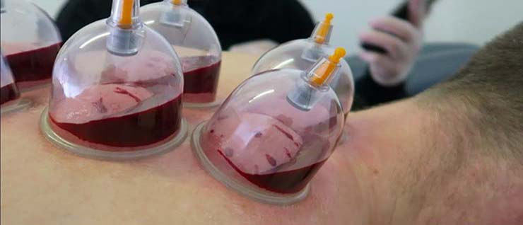

Hijama (Dry & Wet)
Cupping therapy is a form of alternative medicine in which cups are placed on the skin to create
suction.Cupping enables the blood and energy to move again and travel to the area to begin the healing
process. It is a powerful detoxifying, pain relieving and energy building modality that people all over the
 world use for health maintenance.Its effects are remarkable on hypertonicity and aching muscles and activate
the secretion of synovial fluids, which release joint stiffness in ways not possible using the pressure of
traditional massage.
world use for health maintenance.Its effects are remarkable on hypertonicity and aching muscles and activate
the secretion of synovial fluids, which release joint stiffness in ways not possible using the pressure of
traditional massage.
It concurrently creates localized expansion of tissue, producing a profound vasodilatation reaction - drawing
blood flow to areas of ischemic pain, raising skin temperature, promoting metabolism within the skin tissue
for
better functioning of sweat and sebaceous glands, flushing capillary beds, draining stagnant blood, toxins and
lymph, and re-supplying vital nutrients.
Cupping is an excellent form of preventative and curative therapy.
Some of the following are as below:
- Pain relief.
- Asthma
- Back pain
- Arthritis
- Period pain
- Injuries
- Headaches, migraine
- Treats illness and relaxes the patient.
- Detoxification of body
- Cellulite
- Fatigue
- Depression
- Emotional problems
- Sciatica
- Skin problems
- Common cold and flu
- Boosts the circulatory and immune systems.
- Life style diseases like hypertension, cholesterol or obesity
Acne Facial Hijama
Facial cups are typically smaller and softer. They’re used to gently pull the skin away from deeper layers of
fascia. This increases blood flow to the area and rejuvenates the skin.
“Over time this practice improves the complexion and diminishes fine lines and wrinkles”
said Dr Althaf of Dr Rana's Medical Hall.
Cup marks are almost always left behind, but they do serve a diagnostic purpose; the size, shape, and colour
are

said to reflect the amount of “stagnation” or cellular waste buildup. These marks fade as your lymphatic system
processes the waste from 3 to 7 days time.
Facial cupping is an alternative therapy that uses suction cups to stimulate your skin and muscles. The suction
promotes increased blood circulation, which may help relieve muscle tension, promote cell repair, and aid in
other
regeneration
It is an excellent form of non-invasive treatment. It will totally reshape what you know about skincare and
looking younger for longer. Our specialized facial hijama session will help in eliminating: Acne
Scars Wrinkles Tone skin Dark spots Smile lines Pigmentation Signs of Aging Stagnant lymph and toxins from your
face
Herbal Medicines
Herbal medicine is important because it is where modern medicine came from. Prior to the advent of the
modern pharmacy, and large scale manufacturing all people had to go on was what existed in nature. There are
an amazing number of herbs as well as other non herbal plants that possess natural healing properties.
From experience, one of the major disadvantages of modern medicine is that very often there are a number of
undesirable side effects some of which can only be mitigated by the addition of more medications.
What love about herbal medicine is that it can be as potent or better than many synthetically created drugs. For
example, there have been many studies that are now showing that the spice turmeric can be as effective for
depression any many other modern antidepressants and turmeric also works wonders for inflammation and helps to
detox the body.
Siddiqui Hijama and Herbal products are usually much more
affordable to use than many
medications and are more gentle to the system as well. We will say that just like modern medicine there are
limitations to what herbal medicine can accomplish, and that any student of herbal medicine must now be also
cautious of the source of the medicinal herb.